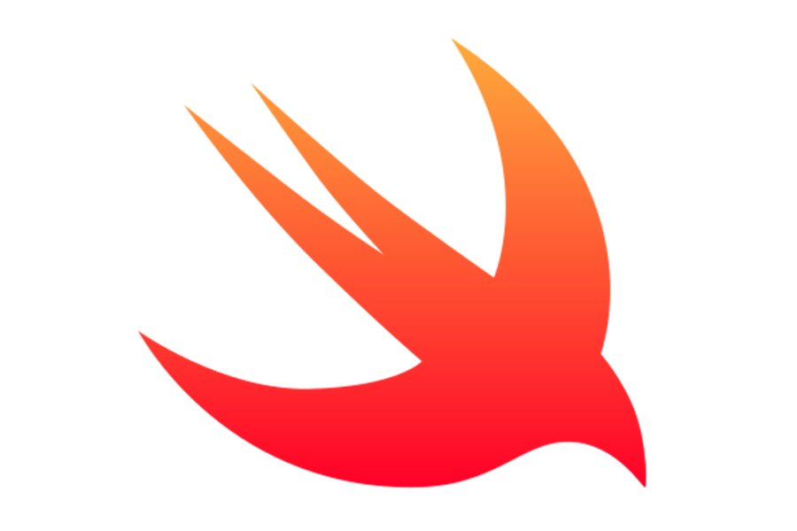

Lenguaje Swift
Descripción.
Swift
es un lenguaje de programación moderno, de alto nivel y de código abierto desarrollado por Apple en 2014. Su principal objetivo es proporcionar una plataforma de desarrollo eficiente y segura para la creación de aplicaciones y software en el vasto ecosistema de Apple, que incluye iOS, macOS, watchOS y tvOS.
A lo largo de los años,
Swift
ha experimentado un crecimiento sustancial en su popularidad y adopción debido a su sintaxis limpia, su enfoque en la seguridad y su rendimiento excepcional.
Características.
Seguro y rápido:
Swift
se ha diseñado teniendo en cuenta la seguridad y el rendimiento. Incluye características como el sistema de tipos estáticos, la inferencia de tipos y el control de errores para minimizar los errores de programación y garantizar un rendimiento óptimo.
Sintaxis clara y legible: La sintaxis de
Swift
es altamente legible y concisa, lo que facilita la comprensión y la escritura de código. Esto lo convierte en un lenguaje atractivo tanto para programadores principiantes como para expertos.
Interoperabilidad con Objective-C:
Swift
se integra perfectamente con el código
Objective-C
existente, lo que permite a los desarrolladores migrar gradualmente a
Swift
y aprovechar las bibliotecas y frameworks de
Objective-C
.
Programación orientada a objetos y funcional:
Swift
combina aspectos de la programación orientada a objetos y funcional, lo que brinda flexibilidad a los desarrolladores para elegir el paradigma que mejor se adapte a sus necesidades.
Manejo de memoria automatizado:
Swift
utiliza un sistema de recolección de basura (garbage collection) y ARC (Conteo automático de referencias) para administrar la memoria de manera eficiente y evitar fugas de memoria.
Amplia biblioteca estándar:
Swift
incluye una extensa biblioteca estándar que ofrece funcionalidades comunes para el desarrollo de aplicaciones, desde manipulación de cadenas y colecciones hasta administración de archivos y comunicaciones de red.
Multiplataforma: Aunque
Swift
se originó en el entorno de Apple, también se ha adaptado para su uso en plataformas no relacionadas con Apple, como Linux, lo que amplía su utilidad y alcance.
Usos.
Desarrollo de aplicaciones iOS:
Swift
es el lenguaje principal para crear aplicaciones móviles en dispositivos iPhone y iPad que funcionan con el sistema operativo iOS.
Desarrollo de aplicaciones macOS: Es utilizado para crear aplicaciones de escritorio que se ejecutan en Mac, aprovechando las capacidades y la interfaz de usuario de macOS.
Desarrollo de aplicaciones watchOS:
Swift
es la elección para desarrollar aplicaciones y caras de reloj personalizadas para dispositivos Apple Watch.
Desarrollo de aplicaciones tvOS: Se emplea en la creación de aplicaciones y juegos para la plataforma Apple TV, que se ejecutan en televisores Apple.
Desarrollo web y servidor:
Swift
se ha adaptado para desarrollar servidores web y aplicaciones web a través de frameworks como Vapor y Kitura, aprovechando su rendimiento y seguridad.
Aplicaciones de escritorio multiplataforma: Se utiliza para desarrollar aplicaciones de escritorio que funcionan en diferentes sistemas operativos, incluidos Windows y Linux, a través de herramientas como SwiftUI.
Desarrollo de aplicaciones de Internet de las cosas (IoT):
Swift
se ha utilizado en el desarrollo de aplicaciones para dispositivos IoT, aprovechando su eficiencia y su capacidad para interactuar con sensores y dispositivos conectados.
